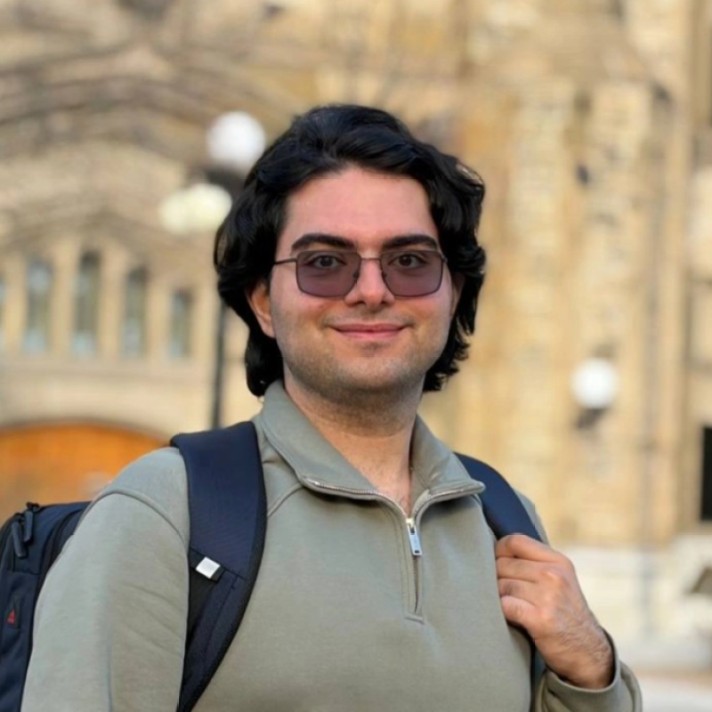

Quantum Optics
Research and experimental work involving quantum states of light and entangled photons.
PHYSICS • QUANTUM OPTICS
University of Ottawa .
Advanced Research Complex
My research focuses on quantum entangled photons, with broader interests in quantum optics, structured light, and quantum communication.

ABOUT
I am a Master's student in the Structued Quantum Optics group at the University of Ottawa, where I work in the field of quantum optics.
My current research focuses on entangled biphotons generated through Spontaneous Parametric Down-Conversion. I am particularly interested in understanding and exploiting the properties of quantum light for applications in quantum information and communication.
RESEARCH
Exploring quantum phenomena involving the generation, manipulation, and measurement of light.
Investigating the spatial structure and degrees of freedom of optical fields.
Exploring quantum properties of light for information processing and communication.
Journal of Photochemistry and Photobiology A: Chemistry, 462, 116219 (2025)
PROJECTS
Research and experimental work involving quantum states of light and entangled photons.
Exploring methods for generating and manipulating structured optical fields.
Computational projects involving numerical simulation and analysis of physical systems.
Education
University of Ottawa 2026-Present
Amirkabir University of Technology 2021-2025
Teaching Experience
General Labs | 2026 Fall Semester
Undergraduate Quantum Mechanics (II) | Winter 2025
Undergraduate Quantum Mechanics (I) | Fall 2024
Undergraduate Calculus (II) | Winter 2023
CONTACT
I am always happy to discuss research, quantum optics, and scientific ideas.